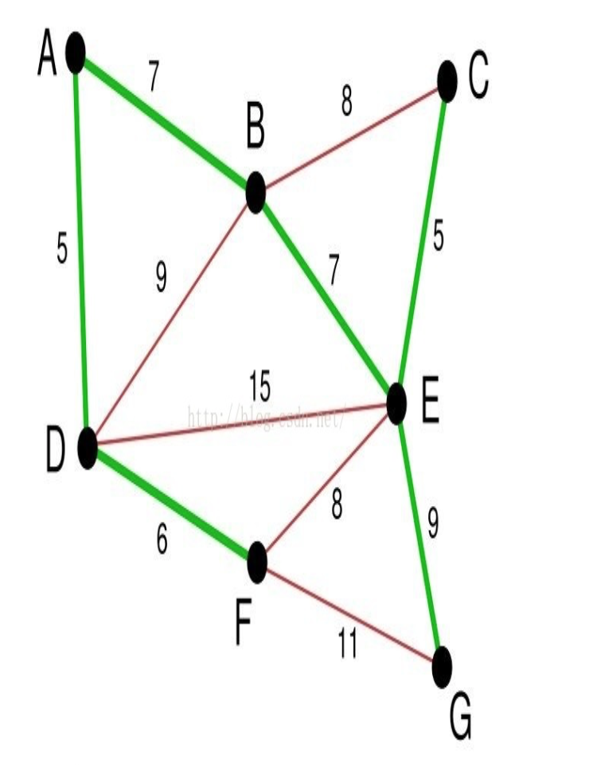

定义
贪心算法，是指在对问题求解时，总是做出再当前看来是最好的选择。也就是说，不从整体最优上加以考虑，他所做出的仅是某种意义上的局部最优解。贪心算法没有固定算法框架，算法设计的关键是贪心策略的选择。必须注意的是，贪心算法不是对所有问题都能得到整体最优解，选择的贪心策略必须具备无后效性，即某个状态以后的过程不会影响以前的状态，只与当前状态有关。
基本思路
- 建立数学模型来描述问题
- 把求解的问题分成若干个子问题
- 对每一子问题求解，得到子问题的局部最优解
- 把子问题的解局部最优解合成原来解问题的一个解
适用的问题
局部最优策略能导致产生全局最优解
最小生成树问题
给定一个无向联通带权图G(V,E). G中的每一条边\(E_i\)权值为\(w_i\)。如果G的子图G'是一个包含G中所有顶点的子图，那么G'称为G的最小生成树，如果G'的边的权值最小.

Kruskal算法
Kruskal算法是基于贪心的思想得到的。首先我们把所有的边按照权值先从小到大排列，接着按照顺序选取每条边，如果这条边的两个端点不属于同一集合，那么就将它们合并，直到所有的点都属于同一个集合为止。至于怎么合并到一个集合，那么这里我们就可以用到一个工具——-并查集。换而言之，Kruskal算法就是基于并查集的贪心算法。
- 将图G看做一个森林，每个顶点为一棵独立的树
- 将所有的边加入集合S，即一开始S = E
- 从S中拿出一条最短的边(u,v)，如果(u,v)不在同一棵树内，则连接u,v合并这两棵树，同时将(u,v)加入生成树的边集E'
- 重复(3)直到所有点属于同一棵树，边集E'就是一棵最小生成树
1 | class UnionFind(): |
Prim算法
- 以某一个点开始，寻找当前该点可以访问的所有的边；
- 在已经寻找的边中发现最小边，这个边必须有一个点还没有访问过，将还没有访问的点加入我们的集合，记录添加的边；
- 寻找当前集合可以访问的所有边，重复2的过程，直到没有新的点可以加入；
- 此时由所有边构成的树即为最小生成树。
1 | def prim(graph, root): |
leetcode 455 Assign Cookies
1 | Assume you are an awesome parent and want to give your children some cookies. But, you should give each child at most one cookie. Each child i has a greed factor gi, which is the minimum size of a cookie that the child will be content with; and each cookie j has a size sj. If sj >= gi, we can assign the cookie j to the child i, and the child i will be content. Your goal is to maximize the number of your content children and output the maximum number. |
因为最小的孩子最容易得到满足，因此先满足最小孩子。给一个孩子的饼干应当尽量小又能满足该孩子，这样大饼干就能拿来给满足度比较大的孩子。 假设在某次选择中，贪心策略选择给第 i 个孩子分配第 m 个饼干，并且第 i 个孩子满足度最小，第 m 个饼干为可以满足第 i 个孩子的最小饼干，利用贪心策略最终可以满足 k 个孩子。假设最优策略在这次选择中给 i 个孩子分配第 n 个饼干，并且这个饼干大于第 m 个饼干。我们发现使用第 m 个饼干去替代第 n 个饼干完全不影响后续的结果，因此不存在比贪心策略更优的策略，即贪心策略就是最优策略。
1 | class Solution: |